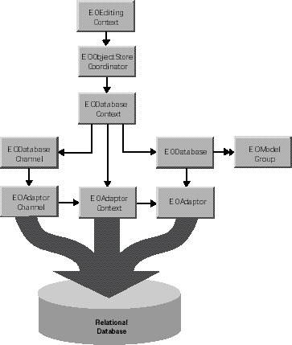
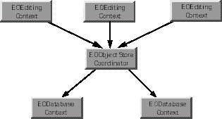

The relationship between EODatabaseContext and other classes in the control and access layers is illustrated in Figure 0-3.
The Role of an EODatabaseContext
As a subclass of EOCooperatingObjectStore, EODatabaseContext acts as one of possibly several EOCooperatingObjectStores for an EOObjectStoreCoordinator, which mediates between EOEditingContexts and EOCooperatingObjectStores. (EOObjectStore, EOCooperatingObjectStore, and EOObjectStoreCoordinator are provided by the control layer.)
An EODatabaseContext creates an EOAdaptorContext when initialized, and uses this object to communicate with the database server.
Though you can create an EODatabaseContext explicitly by using the class method registeredDatabaseContextForModel:editingContext:, you should rarely need to do so. If you're using the "higher-level" objects EOEditingContexts (EOControl) and EODatabaseDataSources, the database contexts those objects need are created automatically, on demand. When you create database data source (typically for use with a display group-the interface layer's EODisplayGroup or WebObject's WODisplayGroup), it registers a database context that's capable of fetching objects for the data source's entities. If objects fetched into an editing context (described more in the following section) have references to objects from EOModels that are based on another database, an EODatabaseContext is creates and registered for each of the additional databases.
EODatabaseContexts are created on demand when an EOObjectStoreCoordinator
(EOControl) posts an EOCooperatingObjectStoreNeeded notification.
The EODatabaseContext class registers for the notification, and
it provides the coordinator with a new EODatabaseContext instance
that can handle the request. For more discussion of this topic,
see the chapter "Application Configurations" in the Enterprise
Objects Framework Developer's Guide.
For the most part, you don't need to programmatically interact with an EODatabaseContext. However, some of the reasons you might want to are as follows:
Conceptually, an EODatabaseContext fetches and saves objects on behalf of an EOEditingContext (EOControl). However, the two objects don't interact with each other directly-an EOObjectStoreCoordinator (EOControl) acts as a mediator between them. The relationship between EOEditingContext, EOObjectStoreCoordinator, and EODatabaseContext is illustrated in Figure 0-4. This configuration includes one EOObjectStoreCoordinator, and can include one or more EOEditingContexts, and one or more EODatabaseContexts.
EOEditingContexts, EOObjectStoreCoordinators, and EODatabaseContexts
When an editing context fetches objects, the request is passed through the coordinator, which forwards it to the appropriate database context based on the fetch specification or global ID. When the database context receives a request to fetch or write information to the database, it tries to use one of its EODatabaseChannels. If all of its channels are busy, it broadcasts an EODatabaseChannelNeededNotification in the hopes that an observer can provide a new channel or that an existing channel can be freed up. This observer could be a manager that decides how many database cursors can be opened by a particular client.
EODatabaseContext knows how to interact with other EOCooperatingObjectStores to save changes made to an object graph in more than one database server. For a more detailed discussion of this subject, see the class specifications for EOObjectStoreCoordinator and EOCooperatingObjectStore.
EODatabaseContext defines a hint for use with an EOFetchSpecification
(EOControl) in the objectsWithFetchSpecification:editingContext: method.
Named by the key EOCustomQueryExpressionHintKey,
the hint's value is a SQL string for performing the fetch. The expression
must query the same attributes in the same order that Enterprise
Objects Framework would if it were generating the SELECT expression
dynamically. If this key is supplied, other characteristics of the
EOFetchSpecification such as isDeep, qualifier,
and sortOrderings are ignored-in that
sense this key is more of a directive than a hint. For more information
on hint keys, see the method description for objectsWithFetchSpecification:editingContext:.
When an EODatabaseContext fetches an object, it examines the relationships defined in the model and creates objects representing the destinations of the fetched object's relationships. For example, if you fetch an employee object, you can ask for its manager and immediately receive an object; you don't have to get the manager's employee ID from the object you just fetched and fetch the manager yourself.
However, EODatabaseContext doesn't immediately fetch data for the destination objects of relationships since fetching is fairly expensive. To avoid this waste of time and resources, the destination objects are created as EOFault objects which act as placeholders. EOFaults (or faults) come in two varieties: single object faults for to-one relationships, and array faults for to-many relationships.
When an EOFault is accessed (sent a message), it triggers its EODatabaseContext to fetch its data and transform it into an instance of the appropriate object class. This preserves both the object's id and its EOGlobalID.
You can fine-tune faulting behavior for additional performance gains by using two different mechanisms: batch faulting, and prefetching relationships.
When you access a fault, its data is fetched from the database. However, triggering one fault has no effect on other faults-it just fetches the object or array of objects for the one fault. You can take advantage of this expensive round trip to the database server by batching faults together. EODatabaseContext provides the batchFetchRelationship:forSourceObjects:editingContext: method for doing this. For example, given an array of Employee objects, this method can fetch all of their departments with one round trip to the server, rather than asking the server for each of the employee's departments individually. You can use the delegate methods databaseContext:shouldFetchArrayFault: and databaseContext:shouldFetchObjectFault: to fine-tune batch faulting behavior.
You can also set batch faulting in an EOModel. In that approach, you specify the number of faults that should be triggered along with the first fault; you don't actually control which faults are triggered the way you do with batchFetchRelationship:forSourceObjects:editingContext:. For more information on setting batch faulting in an EOModel, see the book Enterprise Objects Framework Tools and Techniques.
An EODatabaseContext shares its delegate with its EODatabaseChannels. These delegate methods are actually sent from EODatabaseChannel, but they're defined in EODatabaseContext for ease of access:
You can use the EODatabaseContext delegate methods to intervene when objects are created and when they're fetched from the database. This gives you more fine-grained control over such issues as how an object's primary key is generated ( databaseContext:newPrimaryKeyForObject:entity:), how and if objects are locked ( databaseContext:shouldLockObjectWithGlobalID:snapshot:), what fetch specification is used to fetch objects ( databaseContext:shouldSelectObjectsWithFetchSpecification:databaseChannel:), how batch faulting is performed ( databaseContext:shouldFetchArrayFault: and databaseContext:shouldFetchObjectFault:), and so on. For more information, see the individual delegate method descriptions in the section "Instance Methods" (page 462).
An EODatabase records snapshots for its EODatabaseContexts. These snapshots form the application's view of the current state of the database server. This global view is overridden locally by database contexts, which form their own snapshots as they make changes during a transaction. When a database context commits its top-level transaction, it reconciles all changed snapshots with the global view of the database object, so that other database contexts (except those with open transactions) immediately use the new snapshots as well.
EODatabaseContext supports three updating strategies defined by the EOUpdateStrategy type as integer values:
| Type | Description |
EOUpdateWithOptimisticLocking | The default update strategy. Under optimistic locking, objects aren't locked immediately on being fetched from the server. Instead, whenever you attempt to save updates to an object in the database, the object's snapshot is used to ensure that the values in the corresponding database row haven't changed since the object was fetched. As long as the snapshot matches the values in the database, the update is allowed to proceed. |
EOUpdateWithPessimisticLocking | Causes objects to be locked in the database when they're selected. This ensures that no one else can modify the objects until the transaction ends. However, this doesn't necessarily mean that either the select or the update operation will succeed. |
EOUpdateWithNoLocking | Objects are never locked. No comparisons are made between the snapshot and the row to ensure that the values in the corresponding database row haven't changed since the object was fetched. |
EODatabaseContext also supports "on-demand" locking, in which specific optimistic locks can be promoted to database locks during the course of program execution. You can either use lockObjectWithGlobalID:editingContext: to lock a database row for a particular object, or objectsWithFetchSpecification:editingContext: to fetch objects with a fetch specification that includes locking.
For more discussion of locking strategies, see the chapter "Behind the Scenes" in the Enterprise Objects Framework Developer's Guide.